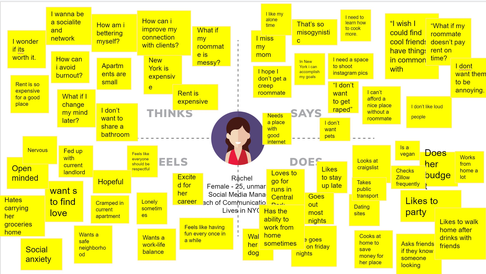
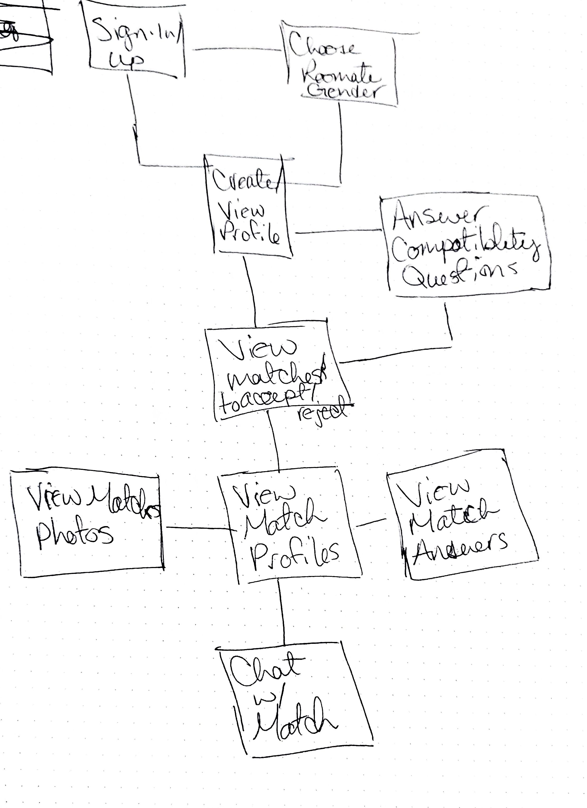
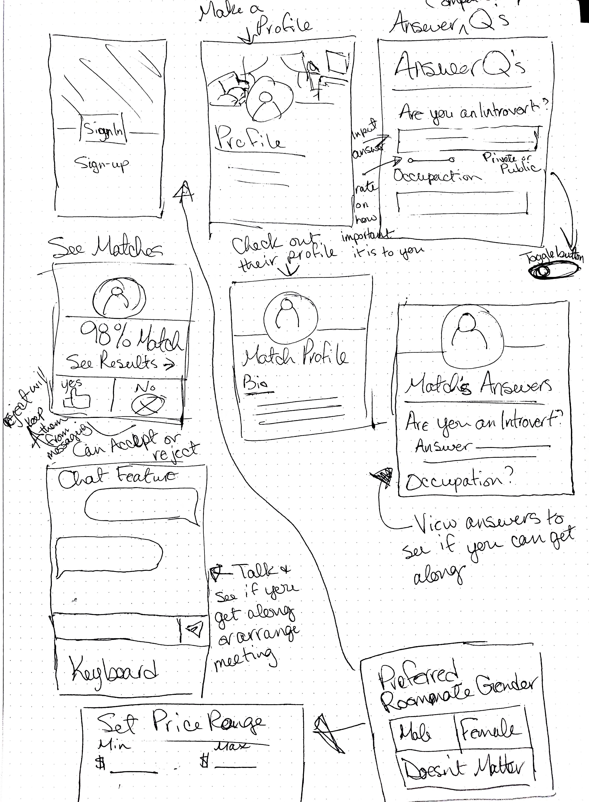
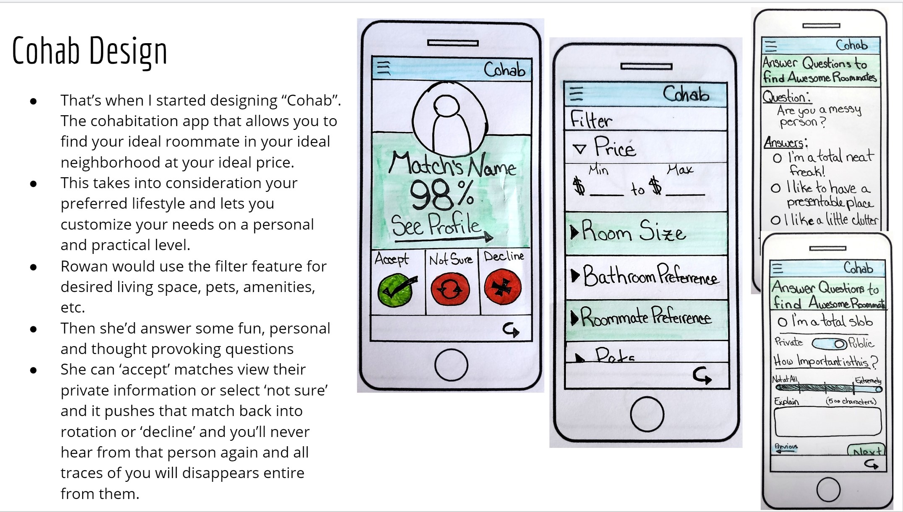

Designing Cohab App
View the prototype of Cohab App
For my final project in User Interface Design 1, we had to come up with a solution for finding a roommate in New York City. Here's a look at my process.
Empathy Map
I first started by making an group empaphy map to get a feel for our user. From there I created a persona named Rowan Parker. I attached a deeper personality to her. She is 25 years old, has a dog named Randall and she's looking for a roommate she can connect with that shares her values and lifestyle. This lead to a lot of research to find out what was actually on the market. Turns out there are a lot of apps or websites that address the solution of finding inexpensive apartments, but there aren't a lot that help the user choose a nice roommate.
User Wireflow
From there I got the idea to base my roommate finder off of a dating app. It will use a similar algorithm that pairs people together in dating apps to find your ideal roommate. I started by sketching out a loose user flow of how Rowan might flow through the app.
Rough Screen Sketches
Then I decided to sketch out some screens and what they might look like based on the flow I started. These were extremely helpful moving forward in thid project. It helped me slow down when I realized I was making this too much like OkCupid or Tinder and make sure I remembered this was to find a roommate.
Final Design
The project called for low fidelity sketches that we grouped to make a simple prototype. In the end my final design settled on Rowan using filters to set her preferences on what she wanted from a room/apartment while also allowing her to have control over the person she let into her life. She'd answer questions and rate their importance, like taking a quiz. The more she answered the more specific her results. She would then get matches based on her answers which she could accept or reject. This gives Rowan control over her needs.